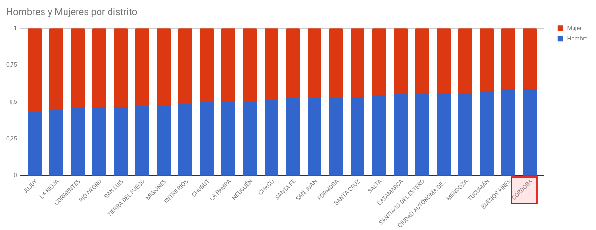
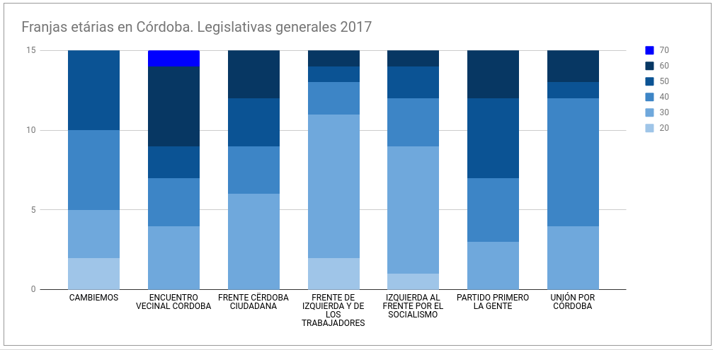
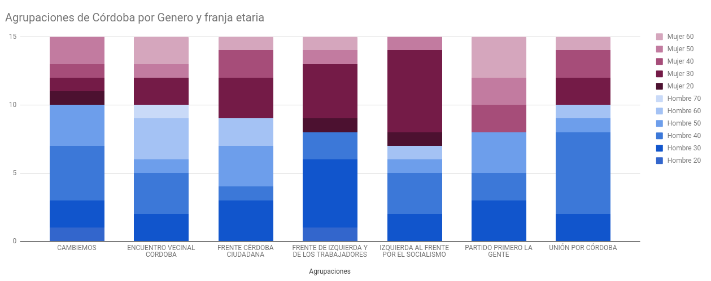

Lista de candidatos¶
Para las elecciones 2017 se liberó una lista en formato Excel de los candidatos completa con DNI y fecha de nacimiento entro otros datos (no se incluyó género).
Pruebas de algunos análisis interesantes para hacer. Cantidad de mujeres por distrito (provincia)

Dentro de Córdoba rangos de edad por partido

Dentro de Córdoba rangos de edad y género por partido

Candidatos 2017¶
ORIGINAL: Lista de candidatos 2017 sin genero en Excel.